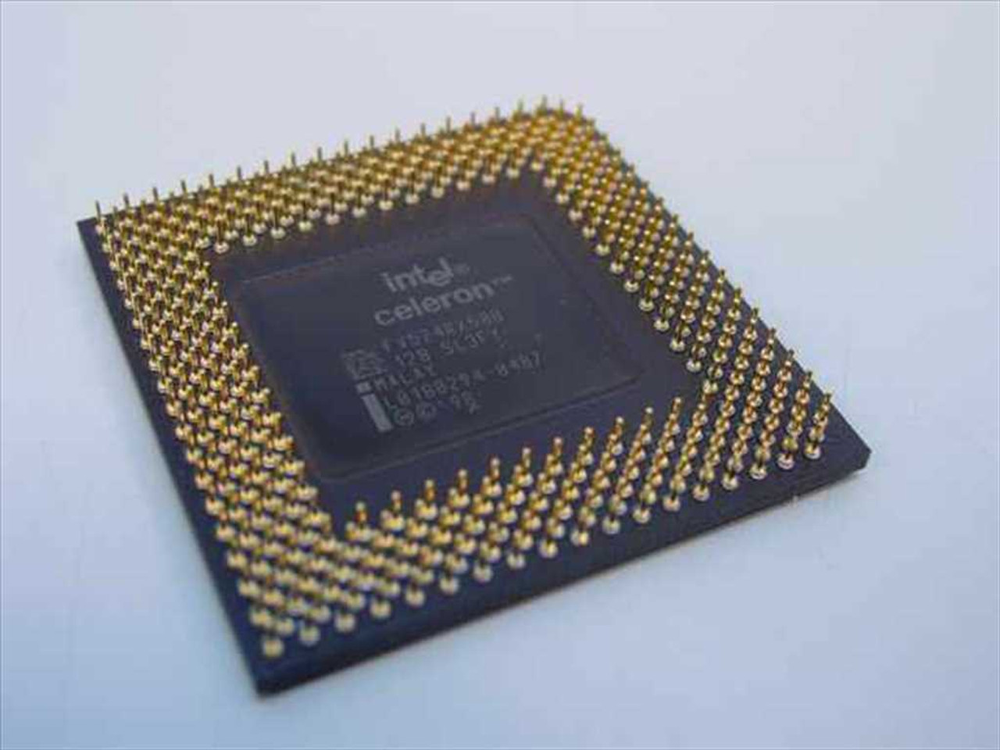

Processor wordt ook wel de CPU genoemd. Het is het brein van de computer, maar eigenlijk is het alleen snel en niet slim.
Het heeft door de tijd enorme ontwikkelingen, rond 1950 hadden ze nog maar 1 transistor, maar nu gebruiken goede computers 11.699.999.999 transistors.
Een transistor dient vooral om elektronische signalen en data te versterken of te schakelen. Transistor. De processor doet 3 dingen: het leest data, verandert data en schrijft data door naar het geheugen.

Kloksnelheid is een waarde die aangegeven wordt door hertz, je hebt verschillende groottes hertzen: hertz, megahertz of gigahertz.
1 megahertz is 1000 hertz en 1 gigahertz is 1000 megahertz. Dit geeft aan hoe vaak een puls gegeven wordt door de control unit.
Hoe vaak per seconden de FDE-cycle uitgevoerd wordt, dit wordt geschreven in mips: millions of instructions per second.
De FDE-cycle is de fetch-decode-execute-cycle en betekent dat het instructies krijgt, bepaald wat er gedaan moet worden en dan het uitvoeren.